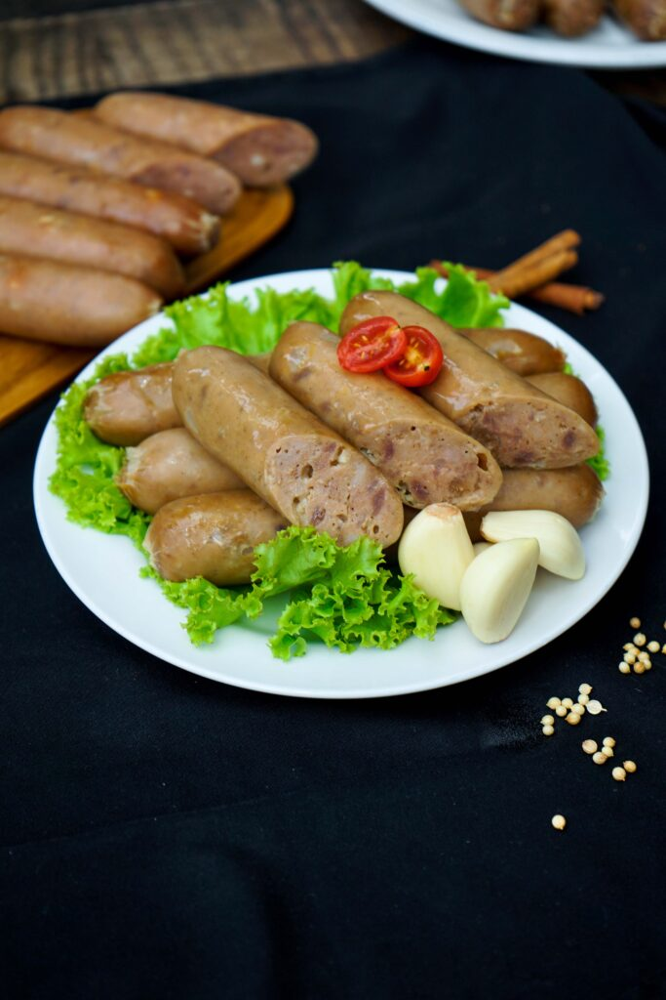
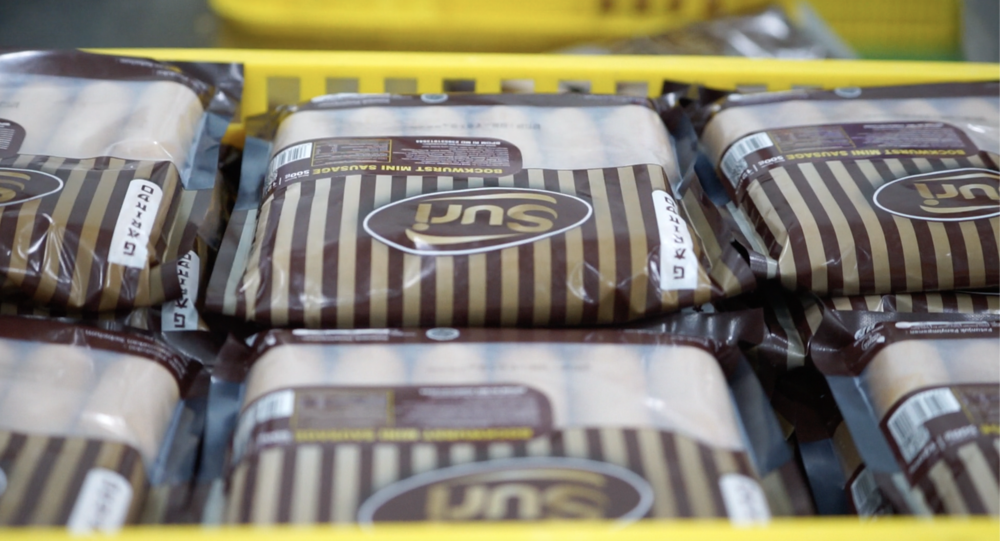
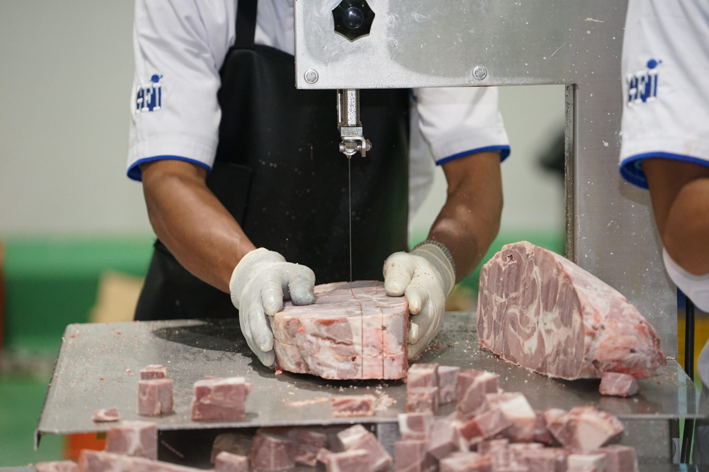
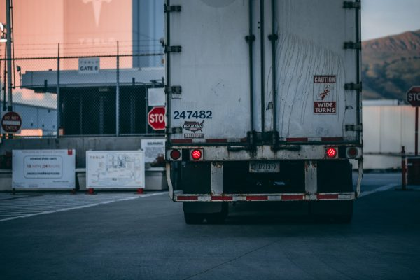

Welcome to PT Garindo Food
Selamat datang di PT Garindo Food! Kami adalah perusahaan yang bergerak di bidang industri pengolahan makanan dan kuliner. Kami berkomitmen untuk menyajikan produk makanan yang higienis, bergizi, dan kaya rasa demi memenuhi kebutuhan konsumen di seluruh Nusantara.
Read MoreProduk Kuliner Berkualitas Tinggi
PT Garindo Food mengutamakan kebersihan, keamanan pangan, dan kualitas rasa di setiap proses produksi. Diproses dengan teknologi modern dan standar higienis tinggi untuk menghasilkan produk kuliner yang aman dan lezat dikonsumsi keluarga.
Read MoreInovasi Rasa untuk Cita Rasa Terbaik
Kami terus berinovasi dalam menghadirkan aneka varian produk makanan yang lezat, bergizi, dan terjangkau. PT Garindo Food siap menjadi mitra terpercaya bagi distributor, mitra bisnis, dan seluruh penikmat kuliner.
Read MoreAbout
Who we are
PT Garindo Food adalah perusahaan produsen dan pengolahan makanan yang berfokus pada penyediaan produk kuliner berkualitas tinggi, sehat, dan higienis. Dengan pengalaman dan dedikasi di industri pangan, kami berkomitmen untuk menghadirkan cita rasa terbaik yang aman dikonsumsi oleh seluruh lapisan masyarakat.
- Seluruh produk diproses sesuai dengan standar higienis dan keamanan mutu pangan.
- Menggunakan bahan-bahan pilihan terbaik yang segar dan alami.
- Berpengalaman dalam memenuhi kebutuhan pasokan kuliner untuk pasar ritel maupun kemitraan bisnis
Melalui penerapan teknologi produksi modern dan kontrol kualitas yang ketat, PT Garindo Food terus melangkah menjadi salah satu produsen makanan terdepan di Indonesia. Kami siap membangun kemitraan yang berkelanjutan dan memberikan nilai tambah bagi konsumen serta mitra bisnis kami
Standar Keamanan Pangan & Mutu Terbaik.
PT Garindo Food mengutamakan kebersihan dan standar mutu tinggi dalam setiap tahap pengolahan makanan untuk menjamin keamanan serta kepuasan konsumen..
-
Sertifikasi standar keamanan mutu pangan. - Pengawasan mutu (Quality Control) yang ketat di setiap jalur produksi.
- Cita rasa konsisten yang disukai seluruh lapisan masyarakat.

Teknologi Pengemasan Higienis & Kedap Udara
Produk kami dikemas menggunakan teknologi modern untuk menjaga kesegaran, kebersihan, dan cita rasa makanan agar tetap optimal hingga ke tangan Anda.
- Kemasan food-grade yang aman dan ramah lingkungan.
- Daya tahan produk lebih lama tanpa bahan pengawet berbahaya.
- Desain kemasan praktis dan menarik untuk kebutuhan ritel.

Bahan Baku Alam Pilihan & Berkualitas
Kami bekerja sama langsung dengan pemasok terpercaya untuk mendapatkan bahan baku pangan yang segar, alami, dan kaya akan nutrisi.
- Bahan baku alami tanpa pewarna buatan.
- Pengolahan yang menjaga kandungan nutrisi makanan.
- Pasokan bahan baku yang selalu terjaga kesegarannya.
.

Jangkauan Distribusi Luas & Tepat Waktu
Dengan sistem logistik yang terintegrasi, PT Garindo Food siap memenuhi kebutuhan pasokan kuliner untuk pasar ritel, agen, maupun mitra bisnis.
- Pengiriman tepat waktu ke berbagai wilayah.
- Kemitraan bisnis yang transparan dan saling menguntungkan.
- Layanan dukungan pelanggan dan kemitraan yang responsif.

Layanan Kami
Apa Yang Kami Tawarkan
Pengolahan Makanan Higienis
Proses produksi makanan modern dengan standar kebersihan dan keamanan pangan tinggi untuk menjaga kualitas serta mutu produk secara optimal.
Penyediaan Bahan Makanan
Menyediakan bahan baku kuliner dan olahan pangan berkualitas unggul untuk memenuhi kebutuhan pasar ritel, grosir, maupun industri.
Layanan Kemitraan Bisnis
Membuka peluang kerja sama kemitraan yang saling menguntungkan bagi para distributor, agen, dan pemilik usaha kuliner di seluruh wilayah.
Inovasi Produk & Resep
Mengembangkan varian rasa dan inovasi produk olahan pangan terbaru secara berkelanjutan untuk menjawab selera dan tren pasar kuliner.
Sistem Logistik & Distribusi
Dukungan pengiriman produk yang terintegrasi dan efisien guna memastikan pasokan makanan tiba secara tepat waktu dan aman.
Pasokan Tepat Waktu
Komitmen pelayanan yang responsif dan konsisten dalam memenuhi permintaan kebutuhan pasokan pangan secara terjadwal.
Testimoni
Apa Kata Mereka Tentang Kami

Budi Santoso
Pemilik Minimarket Kuliner
Produk olahan makanan dari PT Garindo Food sangat diminati oleh pelanggan di toko kami. Kualitas rasa selalu konsisten, kemasannya sangat rapi, dan pengiriman pasokan selalu tepat waktu.

Siti Rahmawati
Distributor Bahan Pangan
Sudah lebih dari dua tahun menjadi mitra distributor PT Garindo Food. Pelayanannya sangat profesional, komunikatif, dan standar higienis produknya benar-benar terjamin aman.

Dewi Lestari
Manajer Operasional Resto
Inovasi resep dan kualitas bahan baku dari Garindo Food sangat membantu menjaga standar kelezatan di restoran kami. Sangat direkomendasikan untuk kemitraan bisnis jangka panjang!

Sujatmiko
Pelanggan Setia
Rasa produk makanannya enak banget dan terasa sangat segar. Keluarga di rumah selalu suka stok produk Garindo Food karena praktis dan sehat dikonsumsi sehari-hari.

Rian Pratama
Agen Kemitraan Daerah
Sistem kerja sama dan pasokan logistik dari PT Garindo Food sangat memuaskan. Respon tim cepat dan selalu memberikan solusi terbaik bagi kami para agen daerah.
Pertanyaan Umum
Frequently Asked Questions (FAQ)
PROFIL PERUSAHAAN
PT GARINDO FOOD INTERNATIONAL

Kontak
Hubungi Kami
garindofood@gmail.com
Telepon
(021) 843-10583
Alamat Kantor
Jl. Kranggan Raya No.45, RT.003 / RW.008, Jatiraden, Jatisampurna, Kota Bekasi, Jawa Barat 17433
Alamat Pabrik
Jl. Inti Raya II, Blok C-10 No. 12-A, Lippo, Cibatu, Cikarang Selatan, Kabupaten Bekasi, Jawa Barat 17530